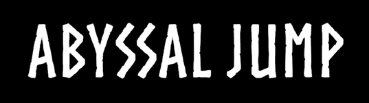
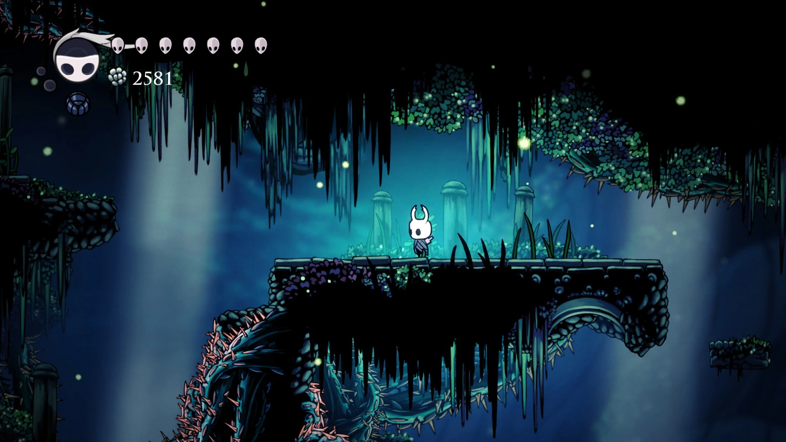
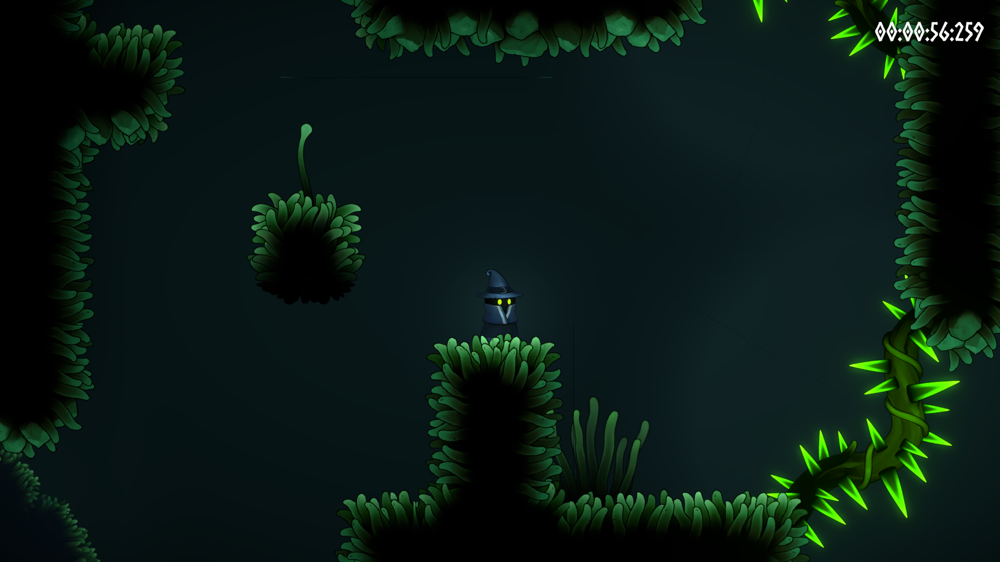
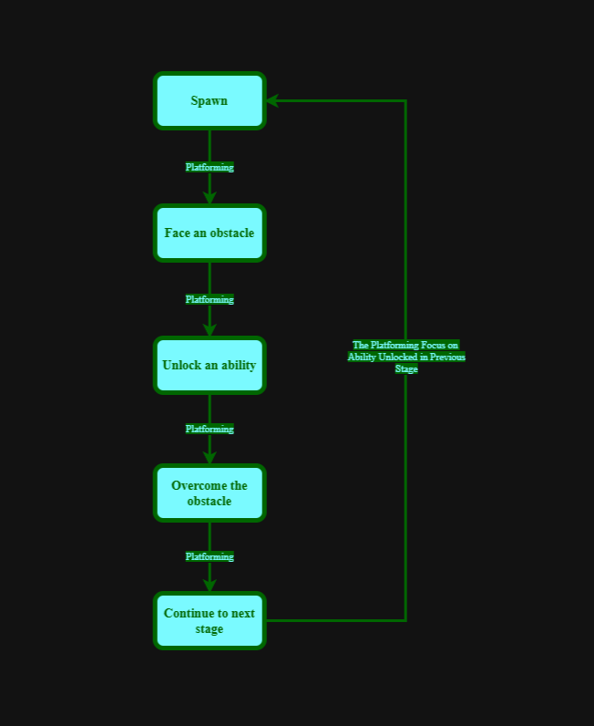

Play Abyssal Jump on itch.io
Play Abyssal Jump on itch.io
01
Game Designer
- Game Concept and Core Mechanics
- Game Core Loops and Progression System
- Writing and Narrative
- Game Balancing
- Level Design
- UI Design
GAME PROJECT

Abyssal Jump is a fast-paced 2D precision platformer built around fluid movement, challenging traversal, and the mastery of movement abilities. Players descend through a dark and mysterious world, overcoming increasingly demanding challenges as every new ability opens a different way forward.
01 — PROJECT DETAILS
Detailed documentation of Abyssal Jump's design, mechanics, systems, progression, and development.
02 — MY CONTRIBUTIONS
03 — DESIGN APPROACH
I’ve always enjoyed the sense of progression found in Metroidvania games, and I wanted to combine that feeling of progression with the precision and challenge of a platformer.
In Abyssal Jump, players must overcome challenging obstacles to unlock new abilities. These abilities then become essential tools for navigating later stages, creating a progression loop where mastery of one challenge opens up new possibilities.
Inspired by Hollow Knight and Celeste, Abyssal Jump combines a dark, atmospheric world with tight platforming. The goal is to make every new ability feel meaningful. Not just as a reward, but as a tool that changes how players approach the challenges ahead.


04 — CORE GAMEPLAY LOOP
